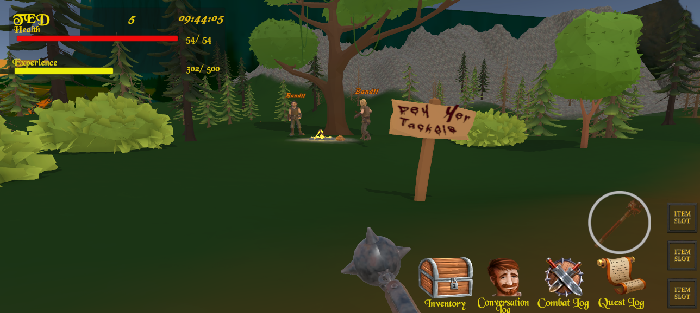
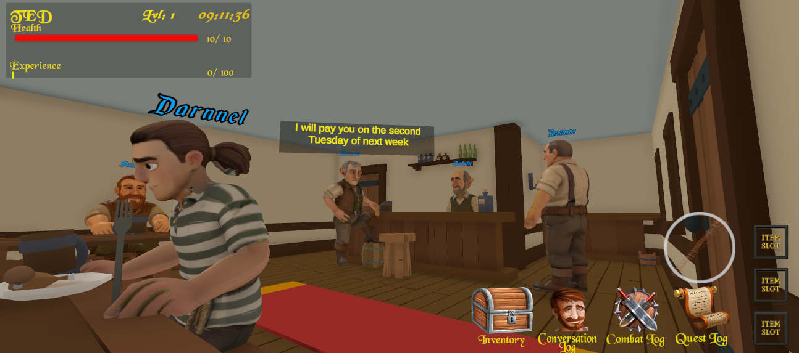
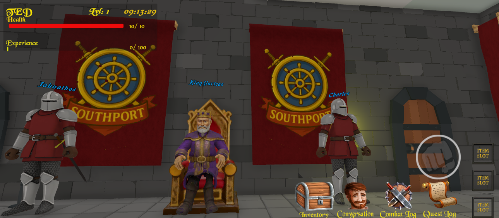
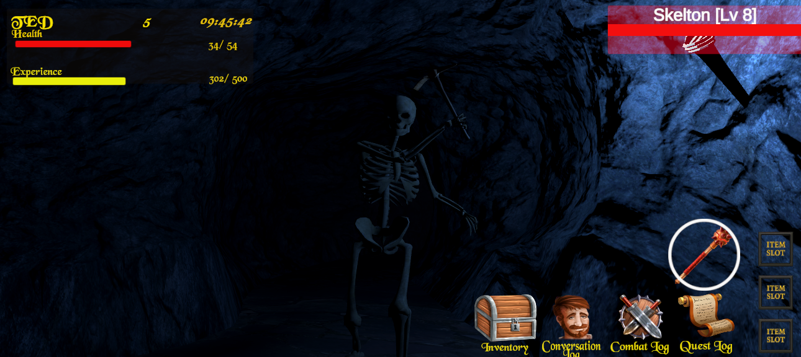
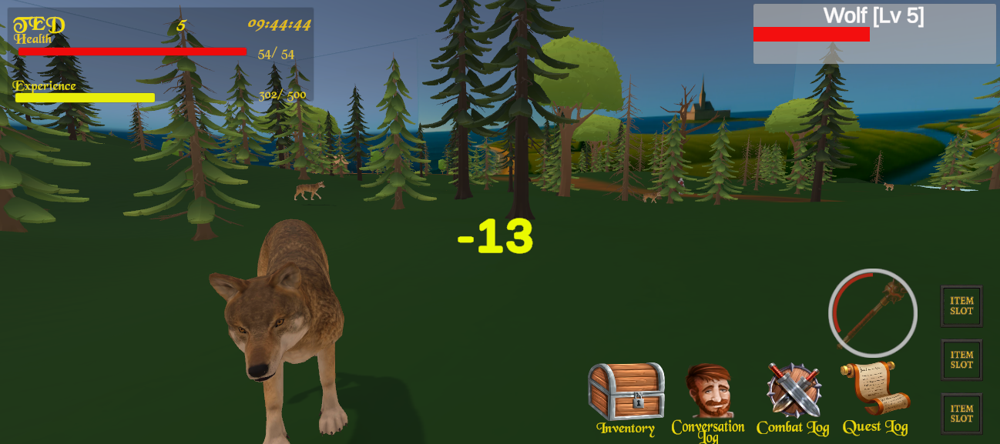
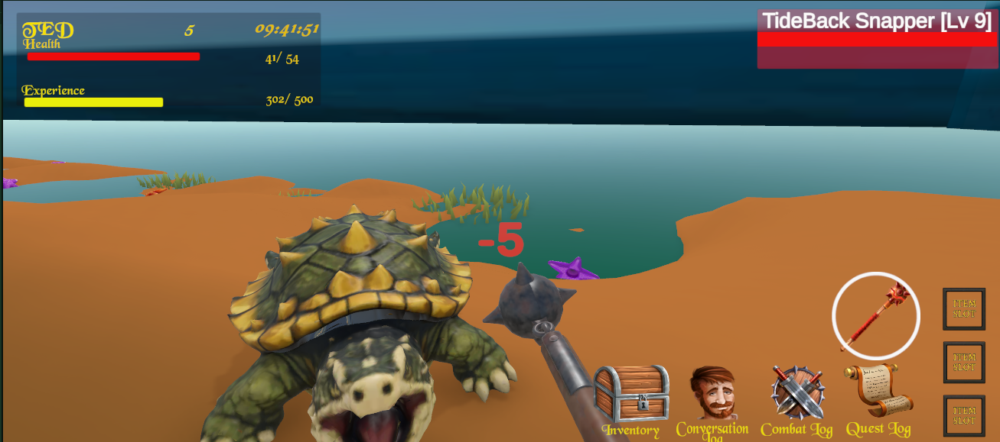

Nezdor
Fantasy RPG
Explore, craft, fight, and progress through a living low-poly world built for offline play.
Status: Demo Available Now
Play the Demo
Windows PC Demo
Version 1.0.3 • No install required
Unzip the file and launch Nezdor_Demo.exe
Offline single-player fantasy RPG demo featuring Southport, beginner quests, crafting, combat, merchants, and progression systems.
Download DX11 Version - 181 MB (Recommended)
Download DX12 Version - 182 MB
Recommended: DX11 for widest compatibility.
Use DX12 for newer systems if preferred.
Screenshots
FAQ




